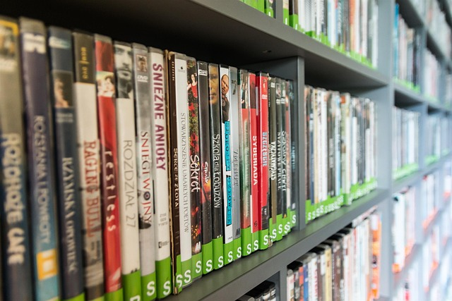

Biblioteken i vår kommun är en plats för bildning, berättelser och möten mellan människor. Som väcker läslust i alla åldrar.
Våra bibliotek erbjuder ett stort urval av medier, både fysiska och digitala. Verksamheten handlar även om att skapa inspirerande miljöer som väcker läslust och inspiration. Därför hittar du en mängd olika aktiviteter som författarsamtal, workshops med möjligheter att träffa andra eller fokusera på dig själv.
Alla biblioteken ska vara inspirerande, kreativa och kunskapsrika miljöer som besökarna gärna kommer tillbaka till. Vi strävar mot att vara öppna, trygga och välkomnande för alla.
Biblioteken arbetar extra mot de i bibliotekslagen prioriterade grupperna när det gäller lokalernas utformning, medieinköp och verksamhetsplanering. De prioriterade grupperna enligt bibliotekslagen är personer med funktionsvariationer, personer med annat modersmål än svenska, nationella minoriteter samt barn och unga.
Klicka här för att komma till bibliotekens hemsida. 